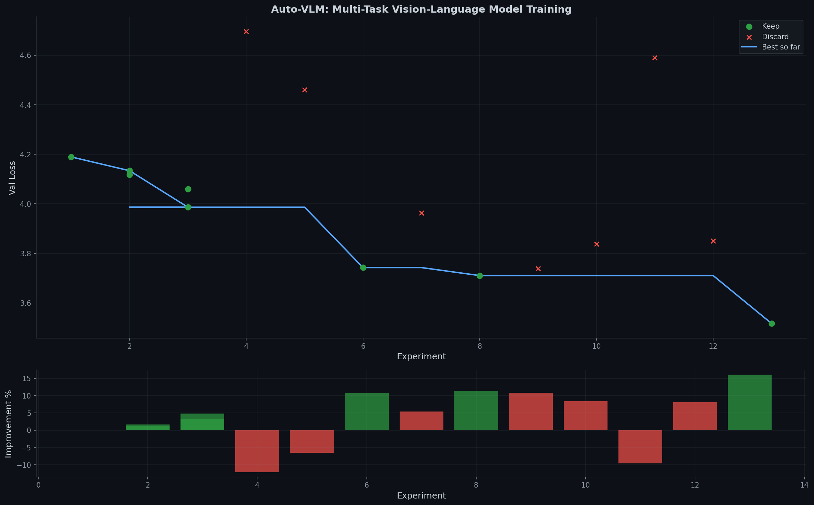

Autonomous research: training a tiny (<10M param) multi-task Vision-Language Model from scratch in MLX

<caption> a dog on grass<vqa> how many? <sep> 2<od> dog <box>loc loc loc loc</box><seg> dog <poly>vertices...</poly>| Run | Val Loss | Params (M) | Status | Time (s) | Improvement | Description |
|---|---|---|---|---|---|---|
| No experiments yet. | ||||||